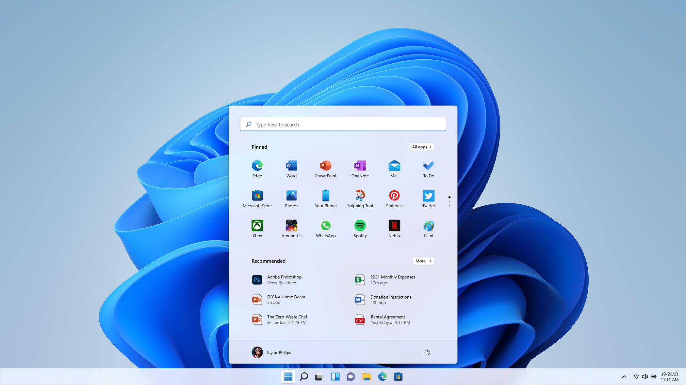

| Strona główna | Dystrybucje | Historia | Porównanie | Ciekawostki | Kontakt |
|---|
Linux: Jest wolnym i otwartoźródłowym systemem operacyjnym, co oznacza, że kod źródłowy jest dostępny publicznie, a użytkownicy mogą go modyfikować i rozprowadzać bez opłat.
Windows: Windows jest komercyjnym systemem operacyjnym firmy Microsoft, co oznacza, że użytkownicy muszą płacić zalicencje.
macOS: macOS jest dostępne wyłącznie na sprzęcie Apple, a jego zakup jest często wliczany w cenę sprzętu.
2. Interfejs użytkownika:Linux: Posiada różnorodne środowiska graficzne, takie jak GNOME, KDE, Xfce itp., co pozwala użytkownikom dostosować wygląd i zachowanie systemu według swoich preferencji.
Windows: Windows ma spójny interfejs użytkownika (np. Windows 10 i 11 mają podobny interfejs), ale użytkownicy mają pewną kontrolę nad dostosowywaniem wyglądu.
macOS: macOS jest znane z eleganckiego i spójnego interfejsu użytkownika, który jest specyficzny dla sprzętu Apple.
3. Dostępność oprogramowania:Linux: Linux posiada ogromną ilość oprogramowania dostępnego za darmo z repozytoriów. Jednak niektóre aplikacje dostępne na Windows i macOS mogą nie być dostępne na Linuxie.
Windows: Windows ma ogromny rynek oprogramowania, w tym wiele komercyjnych aplikacji i gier. Jest to platforma dominująca w grach na PC.
macOS: macOS ma dostęp do wielu aplikacji, w tym tych z Mac App Store i aplikacji kompatybilnych z systemem Unix.
4. Stabilność i bezpieczeństwo:Linux: Jest znany ze stabilności i bezpieczeństwa, zwłaszcza w serwerowych zastosowaniach. Aktualizacje są często dostępne, co pomaga w utrzymaniu bezpieczeństwa.
Windows: Windows jest bardziej narażony na ataki złośliwego oprogramowania i wymaga regularnych aktualizacji zabezpieczeń.
macOS: macOS jest również stosunkowo stabilnym i bezpiecznym systemem operacyjnym, ale nie jest całkowicie odporny na zagrożenia.
5. Wsparcie sprzętowe:Linux: Działa na wielu różnych platformach i architekturach, ale wsparcie sprzętowe może być zróżnicowane w zależności od dystrybucji.
Windows: Windows jest dostosowany do wielu rodzajów sprzętu i ma szerokie wsparcie dla różnych urządzeń.
macOS: macOS działa tylko na sprzęcie Apple, co zapewnia doskonałe wsparcie sprzętowe, ale ogranicza wybór sprzętu.
6. Społeczność i wsparcie:Linux: Ma silną społeczność użytkowników i deweloperów, co oznacza, że można znaleźć wiele źródeł wsparcia online.
Windows: Microsoft oferuje oficjalne wsparcie techniczne dla systemu Windows, a także wiele forów i witryn z informacjami na temat rozwiązywania problemów.
macOS: Apple oferuje wsparcie techniczne dla użytkowników, a także posiada aktywną społeczność użytkowników.